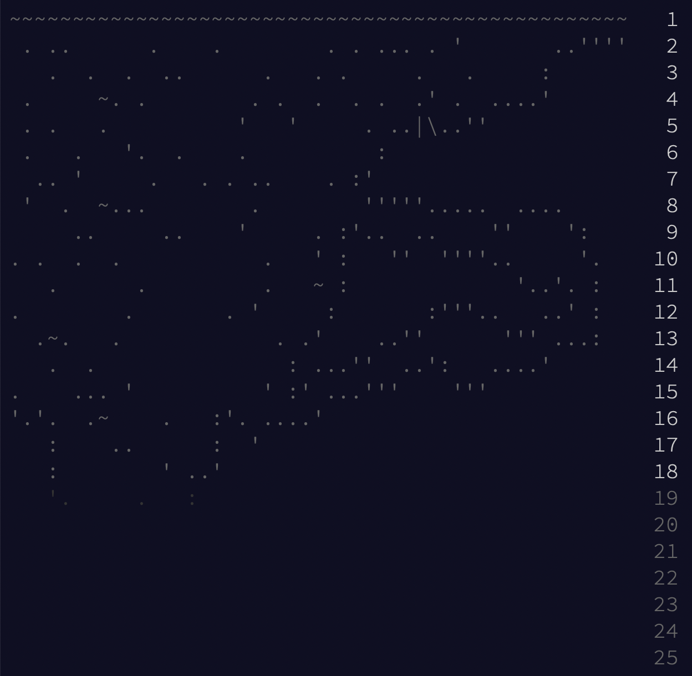
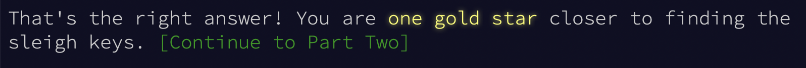
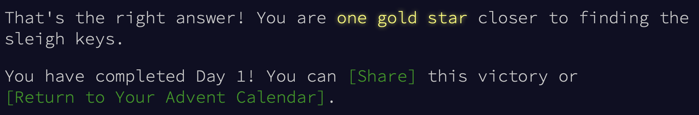

Day 1: Sonar Sweep
As in previous years, Eric Wastl has decided to treat us with his puzzles in the form of an advent calendar. The format works such that every day we open a new puzzle, bringing ourselves closer to Christmas and the holiday season.

This year the alarm caught us off guard while we were peacefully sailing on a ship to the Christmas holidays. It seems one of the elves slipped and sent the keys to Santa’s sleigh straight to the bottom of the ocean! Before you even realized what was happening, the elves had already prepared a submarine, and you somehow ended up inside it. Our submarine is covered in Christmas lights (because it’s a Christmas submarine), and it has an antenna capable of finding the lost keys — but only if we manage to collect 50 stars. To save Christmas we need to get those stars before December 25th!
Each day of AoC contains a puzzle split into two parts. For correctly solving each part we are awarded one star.
As we descend in the submarine we see the result of a sonar scan of the ocean floor. The scan produces a depth map.
For example, suppose you had the following report:
199
200
208
210
200
207
240
269
260
263To be more confident about a safe descent, we want to know how quickly the depth ahead of us is changing. The number of times the next measured depth is greater than the previous one could give us useful information about this.
199 (N/A - no previous measurement)
200 (increased)
208 (increased)
210 (increased)
200 (decreased)
207 (increased)
240 (increased)
269 (increased)
260 (decreased)
263 (increased)Traditionally the first day is something of a “Hello world” for the whole calendar, so solving this problem won’t give us much trouble. Each day I’ll be writing two functions part1 and part2 that are supposed to solve the first and second parts of the puzzle respectively.
part1 :: String -> Int
part1 = numberOfIncreases . map read . lines
where
numberOfIncreases :: [Int] -> Int
numberOfIncreases xs | length xs < 2 = 0
| head xs < head (tail xs) = 1 + numberOfIncreases (tail xs)
| otherwise = numberOfIncreases (tail xs)The function numberOfIncreases counts the number of increases in the input list. It handles 3 cases:
length xs < 2– the input list is too short to compare two elements, so return 0head xs < head (tail xs)– the first element is less than the second element, add 1 to the result and recursively check the tail of the listotherwise– skip the first element without incrementing the result
The function part1 splits the input file into lines using lines, converts them to numbers via read, and passes everything into numberOfIncreases. We compute the result, submit it, and collect the first star of the day!

After solving the first part in Advent Of Code the second one unlocks, which is typically built on top of the first but is meant to be a bit harder.
In the second part we now need to treat a sliding window of three elements as a single element and count the differences between their sums.
In the above example, the sum of each three-measurement window is as follows:
A: 607 (N/A - no previous sum)
B: 618 (increased)
C: 618 (no change)
D: 617 (decreased)
E: 647 (increased)
F: 716 (increased)
G: 769 (increased)
H: 792 (increased)We can easily adapt the solution from part one for part two. Instead of a single element we now take take 3 elements and sum them with sum. All the remaining logic stays the same.
part2 :: String -> Int
part2 = numberOfIncreases . map read .lines
where
numberOfIncreases :: [Int] -> Int
numberOfIncreases xs | length xs < 4 = 0
| sum (take 3 xs) < sum (take 3 $ tail xs) = 1 + numberOfIncreases (tail xs)
| otherwise = numberOfIncreases (tail xs)We submit it and earn the well-deserved second star.

The full solution code can be found on my GitHub, and now it’s time to celebrate the victory over the first puzzle — not the hardest one, but still.